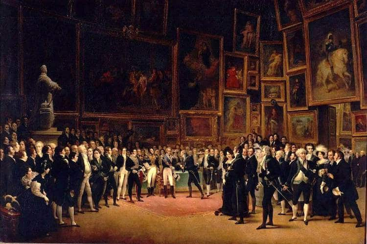

Art Salon at Oliva Gallery: Artist-Led Critique & Conversation
Oliva Gallery invites artists to participate in an Art Salon, a format rooted in a long-standing European tradition dating back to the 18th and 19th centuries. Historically, salons created space for artists to engage directly with one another, outside of formal institutional structures, to speak openly about their work, process, and ideas.
This program returns to that model. Artists are invited to bring work, finished or in progress, and present it in a setting centered on dialogue rather than evaluation. The focus is on exchange with others who are equally invested in the development of their practice.
While the salon takes place within a gallery context, the structure intentionally shifts away from top-down critique. Conversation is led by artists, with space for thoughtful response from peers and attendees. Kimberly, owner and curator of Oliva Gallery, will be present alongside invited curators and arts professionals. All participants are selected with the intention of maintaining a constructive, respectful, and engaged environment.
This is not a critique in the traditional sense, but a space to test ideas, clarify direction, and speak about work in a way that often does not happen in formal exhibition settings.
Follow Oliva Gallery to stay updated on upcoming exhibitions, events, and workshops.
Art Salon: Artist-Led Critique & Conversation
Date
Sunday, May 17, 2026